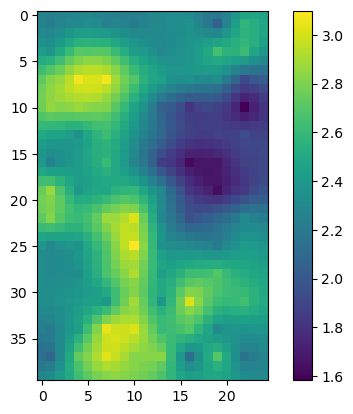

Code
import os
import numpy as np
import matplotlib.pyplot as plt
import flopy
import platform
from pathlib import Path
import shutil
import pandas as pd
import sys
sys.path.insert(0,"..")
import pyemuimport os
import numpy as np
import matplotlib.pyplot as plt
import flopy
import platform
from pathlib import Path
import shutil
import pandas as pd
import sys
sys.path.insert(0,"..")
import pyemuorg_ws = Path('../MV_Model_Files/')
new_ws = 'simple_ies'
if "macos" in platform.platform().lower() or "darwin" in platform.platform().lower():
exe_dir = Path('../bin/mac/')
elif "linux" in platform.platform().lower():
exe_dir = Path('../bin/linux/')
else:
exe_dir = Path('../bin/windows/')if os.path.exists(new_ws):
shutil.rmtree(new_ws)
shutil.copytree(org_ws, new_ws)
for f in os.listdir(exe_dir):
shutil.copy2(os.path.join(exe_dir,f),os.path.join(new_ws,f))sim = flopy.mf6.MFSimulation.load(sim_ws = new_ws)loading simulation...
loading simulation name file...
loading tdis package...
loading model gwf6...
loading package dis...
loading package ic...
WARNING: Block "options" is not a valid block name for file type ic.
loading package npf...
loading package oc...
loading package chd...
loading package rch...
loading package riv...
loading package wel...
loading package obs...
loading solution package at...pyemu.os_utils.run('mf6',cwd=new_ws)./mf6
MODFLOW 6
U.S. GEOLOGICAL SURVEY MODULAR HYDROLOGIC MODEL
VERSION 6.3.0 release candidate 02/06/2022
***DEVELOP MODE***
MODFLOW 6 compiled Feb 06 2022 02:33:33 with Intel(R) Fortran Intel(R) 64
Compiler Classic for applications running on Intel(R) 64, Version 2021.5.0
Build 20211109_000000
This software is preliminary or provisional and is subject to
revision. It is being provided to meet the need for timely best
science. The software has not received final approval by the U.S.
Geological Survey (USGS). No warranty, expressed or implied, is made
by the USGS or the U.S. Government as to the functionality of the
software and related material nor shall the fact of release
constitute any such warranty. The software is provided on the
condition that neither the USGS nor the U.S. Government shall be held
liable for any damages resulting from the authorized or unauthorized
use of the software.
Run start date and time (yyyy/mm/dd hh:mm:ss): 2025/07/18 11:01:43
Writing simulation list file: mfsim.lst
Using Simulation name file: mfsim.nam
Solving: Stress period: 1 Time step: 1
Run end date and time (yyyy/mm/dd hh:mm:ss): 2025/07/18 11:01:43
Elapsed run time: 0.050 Seconds
Normal termination of simulation.for f in ["k_aq.ref","k_clay.ref"]:
arr = np.loadtxt(os.path.join(new_ws,f))
arr[:,:] = arr.mean()
np.savetxt(os.path.join(new_ws,f),arr,fmt="%15.6E")pyemu.os_utils.run('mf6',cwd=new_ws)./mf6
MODFLOW 6
U.S. GEOLOGICAL SURVEY MODULAR HYDROLOGIC MODEL
VERSION 6.3.0 release candidate 02/06/2022
***DEVELOP MODE***
MODFLOW 6 compiled Feb 06 2022 02:33:33 with Intel(R) Fortran Intel(R) 64
Compiler Classic for applications running on Intel(R) 64, Version 2021.5.0
Build 20211109_000000
This software is preliminary or provisional and is subject to
revision. It is being provided to meet the need for timely best
science. The software has not received final approval by the U.S.
Geological Survey (USGS). No warranty, expressed or implied, is made
by the USGS or the U.S. Government as to the functionality of the
software and related material nor shall the fact of release
constitute any such warranty. The software is provided on the
condition that neither the USGS nor the U.S. Government shall be held
liable for any damages resulting from the authorized or unauthorized
use of the software.
Run start date and time (yyyy/mm/dd hh:mm:ss): 2025/07/18 11:01:43
Writing simulation list file: mfsim.lst
Using Simulation name file: mfsim.nam
Solving: Stress period: 1 Time step: 1
Run end date and time (yyyy/mm/dd hh:mm:ss): 2025/07/18 11:01:43
Elapsed run time: 0.052 Seconds
Normal termination of simulation.#need a spatial reference to use pilot points. this means xoff, yoff, rotation, epsg
m=sim.get_model()
m.modelgridxll:0.0; yll:0.0; rotation:0.0; units:feet; lenuni:1pf = pyemu.utils.PstFrom(original_d=new_ws,
new_d='template',
remove_existing=True,
start_datetime="1-1-2025",
spatial_reference=m.modelgrid)2025-07-18 11:01:43.476939 starting: opening PstFrom.log for logging
2025-07-18 11:01:43.477175 starting PstFrom process
2025-07-18 11:01:43.477451 starting: setting up dirs
2025-07-18 11:01:43.477551 starting: copying original_d 'simple_ies' to new_d 'template'
2025-07-18 11:01:43.506515 finished: copying original_d 'simple_ies' to new_d 'template' took: 0:00:00.028964
2025-07-18 11:01:43.506926 finished: setting up dirs took: 0:00:00.029475?pf.add_parametersk_pars = [f for f in os.listdir(new_ws) if 'k_' in f and f.endswith('.ref')]
k_pars
for f in k_pars:
pf.add_parameters(f,par_type='constant',upper_bound=20,lower_bound=0.05,pargp="cn-"+f,par_name_base="cn-"+f)2025-07-18 11:01:43.542198 transform was not passed, setting default transform to 'log'
2025-07-18 11:01:43.542453 starting: adding constant type m style parameters for file(s) ['k_aq.ref']
2025-07-18 11:01:43.542559 starting: loading array template/k_aq.ref
2025-07-18 11:01:43.542922 finished: loading array template/k_aq.ref took: 0:00:00.000363
2025-07-18 11:01:43.542958 loaded array 'simple_ies/k_aq.ref' of shape (40, 25)
2025-07-18 11:01:43.543687 starting: writing array-style template file 'template/cn-k_aq.ref_inst0_constant.csv.tpl'
2025-07-18 11:01:43.543730 starting: writing template file template/cn-k_aq.ref_inst0_constant.csv.tpl for ['cn-k_aq.ref_inst:0']
2025-07-18 11:01:43.548225 finished: writing template file template/cn-k_aq.ref_inst0_constant.csv.tpl for ['cn-k_aq.ref_inst:0'] took: 0:00:00.004495
2025-07-18 11:01:43.548261 starting: writing array-based template file 'template/cn-k_aq.ref_inst0_constant.csv.tpl'
2025-07-18 11:01:43.551994 finished: adding constant type m style parameters for file(s) ['k_aq.ref'] took: 0:00:00.009541
2025-07-18 11:01:43.552042 transform was not passed, setting default transform to 'log'
2025-07-18 11:01:43.552099 starting: adding constant type m style parameters for file(s) ['k_clay.ref']
2025-07-18 11:01:43.552163 starting: loading array template/k_clay.ref
2025-07-18 11:01:43.552414 finished: loading array template/k_clay.ref took: 0:00:00.000251
2025-07-18 11:01:43.552447 loaded array 'simple_ies/k_clay.ref' of shape (40, 25)
2025-07-18 11:01:43.553092 starting: writing array-style template file 'template/cn-k_clay.ref_inst0_constant.csv.tpl'
2025-07-18 11:01:43.553132 starting: writing template file template/cn-k_clay.ref_inst0_constant.csv.tpl for ['cn-k_clay.ref_inst:0']
2025-07-18 11:01:43.557188 finished: writing template file template/cn-k_clay.ref_inst0_constant.csv.tpl for ['cn-k_clay.ref_inst:0'] took: 0:00:00.004056
2025-07-18 11:01:43.557226 starting: writing array-based template file 'template/cn-k_clay.ref_inst0_constant.csv.tpl'
2025-07-18 11:01:43.560688 finished: adding constant type m style parameters for file(s) ['k_clay.ref'] took: 0:00:00.008589#for pilot points, we first need to build a variogram, which describes the underlying spatial correlation structure of the variable
pp_v = pyemu.geostats.ExpVario(contribution=1.0, a=5000) #rule of thumb is that range should be atleast 2x pp spacing (delr= 500
pp_gs = pyemu.geostats.GeoStruct(variograms=pp_v,transform='log')
ax=pp_gs.plot()
ax.axvline(x=500*5*5)for f in k_pars:
base = f.split('.')[0]
pf.add_parameters(f,par_type='pilotpoint',upper_bound=20,lower_bound=0.05,pp_space=3,geostruct=pp_gs,pargp="pp-"+f,par_name_base="pp-"+f)2025-07-18 11:01:43.704203 transform was not passed, setting default transform to 'log'
2025-07-18 11:01:43.704613 starting: adding pilotpoint type m style parameters for file(s) ['k_aq.ref']
2025-07-18 11:01:43.704679 starting: using geostruct:name:struct1,nugget:0.0,structures:
name:var1,contribution:1.0,a:5000.0,anisotropy:1.0,bearing:0.0
2025-07-18 11:01:43.704759 starting: loading array template/k_aq.ref
2025-07-18 11:01:43.705402 finished: loading array template/k_aq.ref took: 0:00:00.000643
2025-07-18 11:01:43.705440 loaded array 'simple_ies/k_aq.ref' of shape (40, 25)
2025-07-18 11:01:43.706238 starting: writing array-style template file 'template/pp-k_aq.ref_inst0_pilotpoint.csv.tpl'
2025-07-18 11:01:43.706287 starting: setting up pilot point parameters
2025-07-18 11:01:43.706357 WARNING: Directly passing 'pp_space' has been deprecated and will eventually be removed, please use pp_options['pp_space'] instead.
2025-07-18 11:01:43.706448 'use_pp_zones' not set in pp_options, Setting to default value: [False]
2025-07-18 11:01:43.706505 'spatial_reference' not set in pp_options, Setting to default value: [None]
2025-07-18 11:01:43.706536 'try_use_ppu' not set in pp_options, Setting to default value: [True]
2025-07-18 11:01:43.706556 'num_threads' not set in pp_options, Setting to default value: [10]
2025-07-18 11:01:43.706572 'minpts_interp' not set in pp_options, Setting to default value: [1]
2025-07-18 11:01:43.706586 'maxpts_interp' not set in pp_options, Setting to default value: [20]
2025-07-18 11:01:43.706695 'search_radius' not set in pp_options, Setting to default value: [10000000000.0]
2025-07-18 11:01:43.706716 'fill_value' not set in pp_options, Setting to default value: [1.0]
2025-07-18 11:01:43.706730 'lower_limit' not set in pp_options, Setting to default value: [1e-30]
2025-07-18 11:01:43.706741 'upper_limit' not set in pp_options, Setting to default value: [1e+30]
2025-07-18 11:01:43.706903 WARNING: `use_ppu` requested but failed to import
falling back to pyemu pp methods
2025-07-18 11:01:43.706938 No spatial reference (containing cell spacing) passed.
2025-07-18 11:01:43.706955 OK - using spatial reference in parent object.
2025-07-18 11:01:43.732278 104 pilot point parameters created
2025-07-18 11:01:43.732455 pilot point 'pargp': pp-k_aq.ref
2025-07-18 11:01:43.732498 finished: setting up pilot point parameters took: 0:00:00.026211
2025-07-18 11:01:43.744229 starting: calculating factors for pargp=pp-k_aq.ref
2025-07-18 11:01:43.744456 saving krige variance file:template/pp-k_aq.ref_inst0pp.var.dat
2025-07-18 11:01:43.744482 saving krige factors file:template/pp-k_aq.ref_inst0pp.fac
starting interp point loop for 1000 points/home/runner/work/PESTPP_Madison25/PESTPP_Madison25/dependencies/pyemu/pyemu/logger.py:100: PyemuWarning: 2025-07-18 11:01:43.706357 WARNING: Directly passing 'pp_space' has been deprecated and will eventually be removed, please use pp_options['pp_space'] instead.
/home/runner/work/PESTPP_Madison25/PESTPP_Madison25/dependencies/pyemu/pyemu/logger.py:100: PyemuWarning: 2025-07-18 11:01:43.706903 WARNING: `use_ppu` requested but failed to import
falling back to pyemu pp methods
starting 0
starting 1
starting 2
starting 3
starting 4
starting 5
starting 6
starting 7
starting 8
starting 9
took 0.830358 seconds
2025-07-18 11:01:44.600321 finished: calculating factors for pargp=pp-k_aq.ref took: 0:00:00.856092
2025-07-18 11:01:44.600448 starting: writing array-based template file 'template/pp-k_aq.ref_inst0pp.dat.tpl'
2025-07-18 11:01:44.600540 saving zone array template/pp-k_aq.ref_inst0pp.dat.zone for tpl file template/pp-k_aq.ref_inst0pp.dat.tpl
2025-07-18 11:01:44.604017 finished: adding pilotpoint type m style parameters for file(s) ['k_aq.ref'] took: 0:00:00.899404
2025-07-18 11:01:44.604865 transform was not passed, setting default transform to 'log'
2025-07-18 11:01:44.604990 starting: adding pilotpoint type m style parameters for file(s) ['k_clay.ref']
2025-07-18 11:01:44.605040 finished: using geostruct:name:struct1,nugget:0.0,structures:
name:var1,contribution:1.0,a:5000.0,anisotropy:1.0,bearing:0.0
took: 0:00:00.900361
2025-07-18 11:01:44.605114 starting: loading array template/k_clay.ref
2025-07-18 11:01:44.605427 finished: loading array template/k_clay.ref took: 0:00:00.000313
2025-07-18 11:01:44.605461 loaded array 'simple_ies/k_clay.ref' of shape (40, 25)
2025-07-18 11:01:44.606165 starting: writing array-style template file 'template/pp-k_clay.ref_inst0_pilotpoint.csv.tpl'
2025-07-18 11:01:44.606213 starting: setting up pilot point parameters
2025-07-18 11:01:44.606318 WARNING: Directly passing 'pp_space' has been deprecated and will eventually be removed, please use pp_options['pp_space'] instead.
2025-07-18 11:01:44.606435 'use_pp_zones' not set in pp_options, Setting to default value: [False]
2025-07-18 11:01:44.606460 'spatial_reference' not set in pp_options, Setting to default value: [None]
2025-07-18 11:01:44.606478 'try_use_ppu' not set in pp_options, Setting to default value: [True]
2025-07-18 11:01:44.606511 'num_threads' not set in pp_options, Setting to default value: [10]
2025-07-18 11:01:44.606528 'minpts_interp' not set in pp_options, Setting to default value: [1]
2025-07-18 11:01:44.606542 'maxpts_interp' not set in pp_options, Setting to default value: [20]
2025-07-18 11:01:44.606554 'search_radius' not set in pp_options, Setting to default value: [10000000000.0]
2025-07-18 11:01:44.606568 'fill_value' not set in pp_options, Setting to default value: [1.0]
2025-07-18 11:01:44.606581 'lower_limit' not set in pp_options, Setting to default value: [1e-30]
2025-07-18 11:01:44.606597 'upper_limit' not set in pp_options, Setting to default value: [1e+30]
2025-07-18 11:01:44.606942 WARNING: `use_ppu` requested but failed to import
falling back to pyemu pp methods
2025-07-18 11:01:44.606980 No spatial reference (containing cell spacing) passed.
2025-07-18 11:01:44.606998 OK - using spatial reference in parent object.
2025-07-18 11:01:44.629116 104 pilot point parameters created
2025-07-18 11:01:44.629236 pilot point 'pargp': pp-k_clay.ref
2025-07-18 11:01:44.629261 finished: setting up pilot point parameters took: 0:00:00.023048
2025-07-18 11:01:44.640685 reusing factors
2025-07-18 11:01:44.640776 starting: writing array-based template file 'template/pp-k_clay.ref_inst0pp.dat.tpl'
2025-07-18 11:01:44.640830 saving zone array template/pp-k_clay.ref_inst0pp.dat.zone for tpl file template/pp-k_clay.ref_inst0pp.dat.tpl
2025-07-18 11:01:44.643621 finished: adding pilotpoint type m style parameters for file(s) ['k_clay.ref'] took: 0:00:00.038631/home/runner/work/PESTPP_Madison25/PESTPP_Madison25/dependencies/pyemu/pyemu/logger.py:100: PyemuWarning: 2025-07-18 11:01:44.606318 WARNING: Directly passing 'pp_space' has been deprecated and will eventually be removed, please use pp_options['pp_space'] instead.
/home/runner/work/PESTPP_Madison25/PESTPP_Madison25/dependencies/pyemu/pyemu/logger.py:100: PyemuWarning: 2025-07-18 11:01:44.606942 WARNING: `use_ppu` requested but failed to import
falling back to pyemu pp methods
?pf.add_observations[f for f in os.listdir(new_ws) if f.endswith('.csv')]['chd.csv', 'at.csv', 'riv.csv', 'at.wt.csv', 'at.budget.csv']obs_csvs = [f for f in os.listdir(new_ws) if f.endswith('.csv')]
for f in obs_csvs:
df = pd.read_csv(os.path.join(new_ws,f))
pf.add_observations(f,index_cols='time',use_cols=df.columns.tolist()[1:])2025-07-18 11:01:44.663264 starting: adding observations from output file chd.csv
2025-07-18 11:01:44.663354 starting: adding observations from tabular output file '['chd.csv']'
2025-07-18 11:01:44.663421 starting: reading list-style file: template/chd.csv
2025-07-18 11:01:44.664423 finished: reading list-style file: template/chd.csv took: 0:00:00.001002
2025-07-18 11:01:44.664936 starting: building insfile for tabular output file chd.csv
2025-07-18 11:01:44.668106 finished: building insfile for tabular output file chd.csv took: 0:00:00.003170
2025-07-18 11:01:44.668177 starting: adding observation from instruction file 'template/chd.csv.ins'
2025-07-18 11:01:44.670660 finished: adding observation from instruction file 'template/chd.csv.ins' took: 0:00:00.002483
2025-07-18 11:01:44.671175 finished: adding observations from tabular output file '['chd.csv']' took: 0:00:00.007821
2025-07-18 11:01:44.671249 finished: adding observations from output file chd.csv took: 0:00:00.007985
2025-07-18 11:01:44.672116 starting: adding observations from output file at.csv
2025-07-18 11:01:44.672169 starting: adding observations from tabular output file '['at.csv']'
2025-07-18 11:01:44.672223 starting: reading list-style file: template/at.csv
2025-07-18 11:01:44.673969 finished: reading list-style file: template/at.csv took: 0:00:00.001746
2025-07-18 11:01:44.675446 starting: building insfile for tabular output file at.csv
2025-07-18 11:01:44.678152 finished: building insfile for tabular output file at.csv took: 0:00:00.002706
2025-07-18 11:01:44.678219 starting: adding observation from instruction file 'template/at.csv.ins'
2025-07-18 11:01:44.680620 finished: adding observation from instruction file 'template/at.csv.ins' took: 0:00:00.002401
2025-07-18 11:01:44.681115 finished: adding observations from tabular output file '['at.csv']' took: 0:00:00.008946
2025-07-18 11:01:44.681182 finished: adding observations from output file at.csv took: 0:00:00.009066
2025-07-18 11:01:44.681820 starting: adding observations from output file riv.csv
2025-07-18 11:01:44.681872 starting: adding observations from tabular output file '['riv.csv']'
2025-07-18 11:01:44.681923 starting: reading list-style file: template/riv.csv
2025-07-18 11:01:44.682717 finished: reading list-style file: template/riv.csv took: 0:00:00.000794
2025-07-18 11:01:44.683173 starting: building insfile for tabular output file riv.csv
2025-07-18 11:01:44.685694 finished: building insfile for tabular output file riv.csv took: 0:00:00.002521
2025-07-18 11:01:44.685760 starting: adding observation from instruction file 'template/riv.csv.ins'
2025-07-18 11:01:44.688193 finished: adding observation from instruction file 'template/riv.csv.ins' took: 0:00:00.002433
2025-07-18 11:01:44.688734 finished: adding observations from tabular output file '['riv.csv']' took: 0:00:00.006862
2025-07-18 11:01:44.688806 finished: adding observations from output file riv.csv took: 0:00:00.006986
2025-07-18 11:01:44.689605 starting: adding observations from output file at.wt.csv
2025-07-18 11:01:44.689659 starting: adding observations from tabular output file '['at.wt.csv']'
2025-07-18 11:01:44.689709 starting: reading list-style file: template/at.wt.csv
2025-07-18 11:01:44.691410 finished: reading list-style file: template/at.wt.csv took: 0:00:00.001701
2025-07-18 11:01:44.692864 starting: building insfile for tabular output file at.wt.csv
2025-07-18 11:01:44.695421 finished: building insfile for tabular output file at.wt.csv took: 0:00:00.002557
2025-07-18 11:01:44.695503 starting: adding observation from instruction file 'template/at.wt.csv.ins'
2025-07-18 11:01:44.697968 finished: adding observation from instruction file 'template/at.wt.csv.ins' took: 0:00:00.002465
2025-07-18 11:01:44.698538 finished: adding observations from tabular output file '['at.wt.csv']' took: 0:00:00.008879
2025-07-18 11:01:44.698611 finished: adding observations from output file at.wt.csv took: 0:00:00.009006
2025-07-18 11:01:44.699305 starting: adding observations from output file at.budget.csv
2025-07-18 11:01:44.699353 starting: adding observations from tabular output file '['at.budget.csv']'
2025-07-18 11:01:44.699399 starting: reading list-style file: template/at.budget.csv
2025-07-18 11:01:44.700717 finished: reading list-style file: template/at.budget.csv took: 0:00:00.001318
2025-07-18 11:01:44.701752 starting: building insfile for tabular output file at.budget.csv
2025-07-18 11:01:44.704298 finished: building insfile for tabular output file at.budget.csv took: 0:00:00.002546
2025-07-18 11:01:44.704364 starting: adding observation from instruction file 'template/at.budget.csv.ins'
2025-07-18 11:01:44.706871 finished: adding observation from instruction file 'template/at.budget.csv.ins' took: 0:00:00.002507
2025-07-18 11:01:44.707390 finished: adding observations from tabular output file '['at.budget.csv']' took: 0:00:00.008037
2025-07-18 11:01:44.707457 finished: adding observations from output file at.budget.csv took: 0:00:00.008152for f in k_pars:
pf.add_observations(f)2025-07-18 11:01:44.711539 starting: adding observations from output file k_aq.ref
2025-07-18 11:01:44.711611 starting: adding observations from array output file 'k_aq.ref'
2025-07-18 11:01:44.713342 starting: adding observation from instruction file 'template/k_aq.ref.ins'
2025-07-18 11:01:44.721448 finished: adding observation from instruction file 'template/k_aq.ref.ins' took: 0:00:00.008106
2025-07-18 11:01:44.721594 finished: adding observations from array output file 'k_aq.ref' took: 0:00:00.009983
2025-07-18 11:01:44.721665 finished: adding observations from output file k_aq.ref took: 0:00:00.010126
2025-07-18 11:01:44.721689 starting: adding observations from output file k_clay.ref
2025-07-18 11:01:44.721717 starting: adding observations from array output file 'k_clay.ref'
2025-07-18 11:01:44.722648 starting: adding observation from instruction file 'template/k_clay.ref.ins'
2025-07-18 11:01:44.730722 finished: adding observation from instruction file 'template/k_clay.ref.ins' took: 0:00:00.008074
2025-07-18 11:01:44.730859 finished: adding observations from array output file 'k_clay.ref' took: 0:00:00.009142
2025-07-18 11:01:44.730924 finished: adding observations from output file k_clay.ref took: 0:00:00.009235pf.mod_sys_cmds.append('mf6')?pf.drawpst = pf.build_pst(filename=os.path.join(pf.new_d,'at.pst'),version=2)noptmax:0, npar_adj:210, nnz_obs:2048
2025-07-18 11:01:44.778473 forward_run line:pyemu.os_utils.run(r'mf6')
# add in the recharge parameter
r = pst.add_parameters('./simple_ies/at.rch.tpl', pst_path='.')
pars = pst.parameter_data
pars.loc['rch','parval1'] = r.loc['rch'].parval1
pars.loc['rch','parlbnd'] = pars.loc['rch'].parval1 * .8
pars.loc['rch','parubnd'] = pars.loc['rch'].parval1 * 1.2
pars.loc['rch','pargp'] = 'recharge'
pars.loc['rch']1 pars added from template file ./at.rch.tplparnme rch
partrans log
parchglim factor
parval1 0.003641
parlbnd 0.002913
parubnd 0.004369
pargp recharge
scale 1.0
offset 0.0
dercom 1
i NaN
inst NaN
j NaN
pname NaN
pstyle NaN
ptype NaN
zone NaN
Name: rch, dtype: objectrb = pst.add_parameters('./simple_ies/riv.ref.tpl', pst_path='.')
rb1 pars added from template file ./riv.ref.tpl| parnme | partrans | parchglim | parval1 | parlbnd | parubnd | pargp | scale | offset | dercom | |
|---|---|---|---|---|---|---|---|---|---|---|
| rv1 | rv1 | log | factor | 100000.0 | 1.100000e-10 | 1.100000e+10 | pargp | 1.0 | 0.0 | 1 |
# and the riverbed conductance
pars = pst.parameter_data
pars.loc['rv1','parval1'] = rb.loc['rv1'].parval1
pars.loc['rv1','parlbnd'] = pars.loc['rv1'].parval1 * .1
pars.loc['rv1','parubnd'] = pars.loc['rv1'].parval1 * 10.0
pars.loc['rv1','pargp'] = 'riverbed'
pars.loc['rv1']parnme rv1
partrans log
parchglim factor
parval1 100000.0
parlbnd 10000.0
parubnd 1000000.0
pargp riverbed
scale 1.0
offset 0.0
dercom 1
i NaN
inst NaN
j NaN
pname NaN
pstyle NaN
ptype NaN
zone NaN
Name: rv1, dtype: objectpst.write(os.path.join(pf.new_d,'at.pst'),version=2)noptmax:0, npar_adj:212, nnz_obs:2048#draw prior ensemble that accounts for PP spatial correlation (this is for later for when we want to use iES)
pe = pf.draw(num_reals=300)
pe.enforce()
pe.to_csv(os.path.join(pf.new_d,'prior.csv'))
2025-07-18 11:01:44.850222 starting: drawing realizations
2025-07-18 11:01:44.850817 starting: Drawing 212 non-specsim pars
building diagonal cov
processing name:struct1,nugget:0.0,structures:
name:var1,contribution:1.0,a:5000.0,anisotropy:1.0,bearing:0.0
working on pargroups ['pp-k_aq.ref']
build cov matrix
done
getting diag var cov 104
scaling full cov by diag var cov
working on pargroups ['pp-k_clay.ref']
build cov matrix
done
getting diag var cov 104
scaling full cov by diag var cov
adding remaining parameters to diagonal
2025-07-18 11:01:44.907787 finished: Drawing 212 non-specsim pars took: 0:00:00.056970
2025-07-18 11:01:44.907856 finished: drawing realizations took: 0:00:00.057634pst = pyemu.Pst(filename=os.path.join(pf.new_d,'at.pst'))pst.pestpp_options["ies_par_en"] = "prior.csv"
obs = pst.observation_data
obs| obsnme | obsval | weight | obgnme | i | j | oname | otype | time | usecol | |
|---|---|---|---|---|---|---|---|---|---|---|
| obsnme | ||||||||||
| oname:chd.csv_otype:lst_usecol:chdflow_time:1 | oname:chd.csv_otype:lst_usecol:chdflow_time:1 | 431437.220303 | 1.0 | oname:chd.csv_otype:lst_usecol:chdflow | NaN | NaN | chd.csv | lst | 1 | chdflow |
| oname:at.csv_otype:lst_usecol:w01_time:1 | oname:at.csv_otype:lst_usecol:w01_time:1 | 11.558825 | 1.0 | oname:at.csv_otype:lst_usecol:w01 | NaN | NaN | at.csv | lst | 1 | w01 |
| oname:at.csv_otype:lst_usecol:w02_time:1 | oname:at.csv_otype:lst_usecol:w02_time:1 | 11.305251 | 1.0 | oname:at.csv_otype:lst_usecol:w02 | NaN | NaN | at.csv | lst | 1 | w02 |
| oname:at.csv_otype:lst_usecol:w03_time:1 | oname:at.csv_otype:lst_usecol:w03_time:1 | 11.355743 | 1.0 | oname:at.csv_otype:lst_usecol:w03 | NaN | NaN | at.csv | lst | 1 | w03 |
| oname:at.csv_otype:lst_usecol:w04_time:1 | oname:at.csv_otype:lst_usecol:w04_time:1 | 10.497010 | 1.0 | oname:at.csv_otype:lst_usecol:w04 | NaN | NaN | at.csv | lst | 1 | w04 |
| ... | ... | ... | ... | ... | ... | ... | ... | ... | ... | ... |
| oname:k_clay_otype:arr_i:9_j:5 | oname:k_clay_otype:arr_i:9_j:5 | 180.925900 | 1.0 | oname:k_clay.ref_otype:arr | 9 | 5 | k | arr | NaN | NaN |
| oname:k_clay_otype:arr_i:9_j:6 | oname:k_clay_otype:arr_i:9_j:6 | 180.925900 | 1.0 | oname:k_clay.ref_otype:arr | 9 | 6 | k | arr | NaN | NaN |
| oname:k_clay_otype:arr_i:9_j:7 | oname:k_clay_otype:arr_i:9_j:7 | 180.925900 | 1.0 | oname:k_clay.ref_otype:arr | 9 | 7 | k | arr | NaN | NaN |
| oname:k_clay_otype:arr_i:9_j:8 | oname:k_clay_otype:arr_i:9_j:8 | 180.925900 | 1.0 | oname:k_clay.ref_otype:arr | 9 | 8 | k | arr | NaN | NaN |
| oname:k_clay_otype:arr_i:9_j:9 | oname:k_clay_otype:arr_i:9_j:9 | 180.925900 | 1.0 | oname:k_clay.ref_otype:arr | 9 | 9 | k | arr | NaN | NaN |
2048 rows × 10 columns
pyemu.os_utils.run('pestpp-ies at.pst',cwd='template')./pestpp-ies at.pst
pestpp-ies: a GLM iterative ensemble smoother
by the PEST++ development team
version: 5.2.21
binary compiled on Jul 14 2025 at 14:36:32
started at 07/18/25 11:01:45
...processing command line: ' ./pestpp-ies at.pst'
...using serial run manager
using control file: "at.pst"
in directory: "/home/runner/work/PESTPP_Madison25/PESTPP_Madison25/notebooks/template"
on host: "pkrvmq0rgcvqdmg"
processing control file at.pst
Note: 'NOPTMAX' == 0, switching to forgiveness mode when checking inputs
noptmax = 0, resetting max_run_fail = 1
checking model IO files...done
starting serial run manager ...
--- initializing ---
--- 'noptmax'=0, running control file parameter values and quitting ---
...saving control file parameter ensemble to at.base.par.csv
...initializing prior parameter covariance matrix
...parcov loaded from parameter bounds, using par_sigma_range 4
...running control file parameter values
--- starting serial run manager for 1 runs ---
07/18/25 11:01:45 processing template files with 1 threads...
07/18/25 11:01:45 done, took 0.009 seconds
07/18/25 11:01:45 calling forward run command(s)
07/18/25 11:01:45 calling forward run command: 'python forward_run.py'
...pid: 3356
MODFLOW 6
U.S. GEOLOGICAL SURVEY MODULAR HYDROLOGIC MODEL
VERSION 6.3.0 release candidate 02/06/2022
***DEVELOP MODE***
MODFLOW 6 compiled Feb 06 2022 02:33:33 with Intel(R) Fortran Intel(R) 64
Compiler Classic for applications running on Intel(R) 64, Version 2021.5.0
Build 20211109_000000
This software is preliminary or provisional and is subject to
revision. It is being provided to meet the need for timely best
science. The software has not received final approval by the U.S.
Geological Survey (USGS). No warranty, expressed or implied, is made
by the USGS or the U.S. Government as to the functionality of the
software and related material nor shall the fact of release
constitute any such warranty. The software is provided on the
condition that neither the USGS nor the U.S. Government shall be held
liable for any damages resulting from the authorized or unauthorized
use of the software.
Run start date and time (yyyy/mm/dd hh:mm:ss): 2025/07/18 11:01:45
Writing simulation list file: mfsim.lst
Using Simulation name file: mfsim.nam
Solving: Stress period: 1 Time step: 1
Run end date and time (yyyy/mm/dd hh:mm:ss): 2025/07/18 11:01:45
Elapsed run time: 0.052 Seconds
Normal termination of simulation.
error removing tmp file:chd.csv
error removing tmp file:at.csv
error removing tmp file:riv.csv
error removing tmp file:at.wt.csv
error removing tmp file:at.budget.csv
error removing tmp file:k_aq.ref
error removing tmp file:k_clay.ref
starting list mlt 2025-07-18 11:01:45.919310
number of chunks to process: 1
process 0 processed 0 process_list_file calls
finished list mlt 2025-07-18 11:01:45.919387
starting fac2real 2025-07-18 11:01:45.919395
number of chunks to process: 1
process 0 processed 2 fac2real calls
finished fac2real 2025-07-18 11:01:45.934703
starting arr mlt 2025-07-18 11:01:45.934710
number of chunks to process: 1
process 0 processed 2 process_array_file calls
finished arr mlt 2025-07-18 11:01:45.939902
./mf6
...exit_code: 3356
...status: 0
07/18/25 11:01:46 forward run command(s) finished, took 1.05 seconds
07/18/25 11:01:46 processing instruction files with 1 threads...
thread 0 processed 7 instruction files
07/18/25 11:01:46 done, took 0.007 seconds
-->07/18/25 11:01:46 run complete, took: 1.067 seconds
-->1 of 1 complete, 0 failed
--- serial run manager runs summary: ---
1 of 1 complete, 0 failed
process took : 1.067 seconds
...saving results from control file parameter value run to at.base.obs.csv
--- control file parameter phi report: ---
phi type mean std min max
measured 0 0 0 0
actual 0 0 0 0
note: 'measured' phi reported above includes
realizations of measurement noise,
'actual' phi does not.
--- observation group phi summary ---
(computed using 'actual' phi)
(sorted by mean phi)
group count nconflict mean std min max percent std
oname:at.wt.csv_otype:lst_usecol:u11 1 0 0 0 0 0 0 0
oname:at.csv_otype:lst_usecol:w16 1 0 0 0 0 0 0 0
oname:at.csv_otype:lst_usecol:w17 1 0 0 0 0 0 0 0
oname:at.wt.csv_otype:lst_usecol:u01 1 0 0 0 0 0 0 0
oname:at.wt.csv_otype:lst_usecol:u02 1 0 0 0 0 0 0 0
oname:at.wt.csv_otype:lst_usecol:u03 1 0 0 0 0 0 0 0
oname:at.wt.csv_otype:lst_usecol:u04 1 0 0 0 0 0 0 0
oname:at.wt.csv_otype:lst_usecol:u05 1 0 0 0 0 0 0 0
oname:at.wt.csv_otype:lst_usecol:u06 1 0 0 0 0 0 0 0
oname:at.wt.csv_otype:lst_usecol:u07 1 0 0 0 0 0 0 0
oname:at.wt.csv_otype:lst_usecol:u08 1 0 0 0 0 0 0 0
Note: only the first 10 highest mean phi groups are listed. See rec file for full listing
saved par and rei files for realization BASE
pestpp-ies analysis complete...
started at 07/18/25 11:01:45
finished at 07/18/25 11:01:46
took 0.0166667 minutespst.set_res(os.path.join(pf.new_d,"at.base.rei"))pst.phi2.6616070244088824e-11assert pst.phi < 1e-6#zero everything out for starters
obs.weight = 0#we need to tell PEST what are the observed values and their weights, to calc the objective function
truth = pd.read_csv(os.path.join(new_ws,'obsvalues.dat'),sep=r'\s+')
truth| obsnme | obsval | weight | obgnme | |
|---|---|---|---|---|
| 0 | w01 | 11.85000 | 1.000000 | headgroup |
| 1 | w02 | 11.35000 | 1.000000 | headgroup |
| 2 | w03 | 11.83000 | 1.000000 | headgroup |
| 3 | w04 | 11.43000 | 1.000000 | headgroup |
| 4 | w05 | 10.50000 | 1.000000 | headgroup |
| 5 | w06 | 10.79000 | 1.000000 | headgroup |
| 6 | w07 | 9.13000 | 1.000000 | headgroup |
| 7 | w08 | 8.79000 | 1.000000 | headgroup |
| 8 | w09 | 8.83000 | 1.000000 | headgroup |
| 9 | w10 | 10.64000 | 1.000000 | headgroup |
| 10 | w11 | 4.25000 | 1.000000 | headgroup |
| 11 | w12 | 4.18000 | 1.000000 | headgroup |
| 12 | w13 | 7.56000 | 1.000000 | headgroup |
| 13 | w14 | 2.69000 | 1.000000 | headgroup |
| 14 | w15 | 4.57000 | 1.000000 | headgroup |
| 15 | w16 | 2.73000 | 1.000000 | headgroup |
| 16 | w17 | 6.22000 | 1.000000 | headgroup |
| 17 | u01 | 12.05000 | 1.000000 | headgroup |
| 18 | u02 | 11.63000 | 1.000000 | headgroup |
| 19 | u03 | 12.15000 | 1.000000 | headgroup |
| 20 | u04 | 11.44000 | 1.000000 | headgroup |
| 21 | u05 | 10.86000 | 1.000000 | headgroup |
| 22 | u06 | 10.80000 | 1.000000 | headgroup |
| 23 | u07 | 9.16000 | 1.000000 | headgroup |
| 24 | u08 | 8.82000 | 1.000000 | headgroup |
| 25 | u09 | 8.86000 | 1.000000 | headgroup |
| 26 | u10 | 10.65000 | 1.000000 | headgroup |
| 27 | u11 | 4.26000 | 1.000000 | headgroup |
| 28 | u12 | 4.19000 | 1.000000 | headgroup |
| 29 | u13 | 7.57000 | 1.000000 | headgroup |
| 30 | u14 | 2.70000 | 1.000000 | headgroup |
| 31 | u15 | 4.59000 | 1.000000 | headgroup |
| 32 | u16 | 2.76000 | 1.000000 | headgroup |
| 33 | u17 | 6.23000 | 1.000000 | headgroup |
| 34 | w02 | 0.28000 | 0.010000 | headdiffgroup |
| 35 | w08 | 0.03000 | 0.010000 | headdiffgroup |
| 36 | w15 | 0.02000 | 0.010000 | headdiffgroup |
| 37 | chdflow | 33390.41096 | 0.000299 | lakegroup |
| 38 | pf | -96402.00000 | 0.000104 | rivgroup |
| 39 | ds | -798092.00000 | 0.000013 | rivgroup |
obs["standard_deviation"] = np.nan
for i,stuff in truth.iterrows():
if "headgroup" in stuff.obgnme or "headdiffgroup" in stuff.obgnme or "riv" in stuff.obgnme:
obs.loc[obs.obsnme.str.contains(stuff.obsnme),'obsval'] = stuff.obsval
obs.loc[obs.obsnme.str.contains(stuff.obsnme),'weight'] = stuff.weight
obs.loc[obs.obsnme.str.contains(stuff.obsnme),'obgnme'] = stuff.obgnme
if "headdiff" in stuff.obgnme:
obs.loc[obs.obsnme.str.contains(stuff.obsnme),'standard_deviation'] = np.abs(stuff.obsval) * 0.15
elif "headgroup" in stuff.obgnme:
obs.loc[obs.obsnme.str.contains(stuff.obsnme),'standard_deviation'] = 1
else:
obs.loc[obs.obsnme.str.contains(stuff.obsnme),'standard_deviation'] = np.abs(stuff.obsval) * 0.1/tmp/ipykernel_3172/2432553825.py:5: FutureWarning: Setting an item of incompatible dtype is deprecated and will raise an error in a future version of pandas. Value '0.01' has dtype incompatible with int64, please explicitly cast to a compatible dtype first.obs.loc[obs.weight>0]| obsnme | obsval | weight | obgnme | i | j | oname | otype | time | usecol | standard_deviation | |
|---|---|---|---|---|---|---|---|---|---|---|---|
| obsnme | |||||||||||
| oname:at.csv_otype:lst_usecol:w01_time:1 | oname:at.csv_otype:lst_usecol:w01_time:1 | 11.85 | 1.000000 | headgroup | NaN | NaN | at.csv | lst | 1 | w01 | 1.0000 |
| oname:at.csv_otype:lst_usecol:w02_time:1 | oname:at.csv_otype:lst_usecol:w02_time:1 | 0.28 | 0.010000 | headdiffgroup | NaN | NaN | at.csv | lst | 1 | w02 | 0.0420 |
| oname:at.csv_otype:lst_usecol:w03_time:1 | oname:at.csv_otype:lst_usecol:w03_time:1 | 11.83 | 1.000000 | headgroup | NaN | NaN | at.csv | lst | 1 | w03 | 1.0000 |
| oname:at.csv_otype:lst_usecol:w04_time:1 | oname:at.csv_otype:lst_usecol:w04_time:1 | 11.43 | 1.000000 | headgroup | NaN | NaN | at.csv | lst | 1 | w04 | 1.0000 |
| oname:at.csv_otype:lst_usecol:w05_time:1 | oname:at.csv_otype:lst_usecol:w05_time:1 | 10.50 | 1.000000 | headgroup | NaN | NaN | at.csv | lst | 1 | w05 | 1.0000 |
| oname:at.csv_otype:lst_usecol:w06_time:1 | oname:at.csv_otype:lst_usecol:w06_time:1 | 10.79 | 1.000000 | headgroup | NaN | NaN | at.csv | lst | 1 | w06 | 1.0000 |
| oname:at.csv_otype:lst_usecol:w07_time:1 | oname:at.csv_otype:lst_usecol:w07_time:1 | 9.13 | 1.000000 | headgroup | NaN | NaN | at.csv | lst | 1 | w07 | 1.0000 |
| oname:at.csv_otype:lst_usecol:w08_time:1 | oname:at.csv_otype:lst_usecol:w08_time:1 | 0.03 | 0.010000 | headdiffgroup | NaN | NaN | at.csv | lst | 1 | w08 | 0.0045 |
| oname:at.csv_otype:lst_usecol:w09_time:1 | oname:at.csv_otype:lst_usecol:w09_time:1 | 8.83 | 1.000000 | headgroup | NaN | NaN | at.csv | lst | 1 | w09 | 1.0000 |
| oname:at.csv_otype:lst_usecol:w10_time:1 | oname:at.csv_otype:lst_usecol:w10_time:1 | 10.64 | 1.000000 | headgroup | NaN | NaN | at.csv | lst | 1 | w10 | 1.0000 |
| oname:at.csv_otype:lst_usecol:w11_time:1 | oname:at.csv_otype:lst_usecol:w11_time:1 | 4.25 | 1.000000 | headgroup | NaN | NaN | at.csv | lst | 1 | w11 | 1.0000 |
| oname:at.csv_otype:lst_usecol:w12_time:1 | oname:at.csv_otype:lst_usecol:w12_time:1 | 4.18 | 1.000000 | headgroup | NaN | NaN | at.csv | lst | 1 | w12 | 1.0000 |
| oname:at.csv_otype:lst_usecol:w13_time:1 | oname:at.csv_otype:lst_usecol:w13_time:1 | 7.56 | 1.000000 | headgroup | NaN | NaN | at.csv | lst | 1 | w13 | 1.0000 |
| oname:at.csv_otype:lst_usecol:w14_time:1 | oname:at.csv_otype:lst_usecol:w14_time:1 | 2.69 | 1.000000 | headgroup | NaN | NaN | at.csv | lst | 1 | w14 | 1.0000 |
| oname:at.csv_otype:lst_usecol:w15_time:1 | oname:at.csv_otype:lst_usecol:w15_time:1 | 0.02 | 0.010000 | headdiffgroup | NaN | NaN | at.csv | lst | 1 | w15 | 0.0030 |
| oname:at.csv_otype:lst_usecol:w16_time:1 | oname:at.csv_otype:lst_usecol:w16_time:1 | 2.73 | 1.000000 | headgroup | NaN | NaN | at.csv | lst | 1 | w16 | 1.0000 |
| oname:at.csv_otype:lst_usecol:w17_time:1 | oname:at.csv_otype:lst_usecol:w17_time:1 | 6.22 | 1.000000 | headgroup | NaN | NaN | at.csv | lst | 1 | w17 | 1.0000 |
| oname:riv.csv_otype:lst_usecol:ds_time:1 | oname:riv.csv_otype:lst_usecol:ds_time:1 | -798092.00 | 0.000013 | rivgroup | NaN | NaN | riv.csv | lst | 1 | ds | 79809.2000 |
| oname:riv.csv_otype:lst_usecol:pf_time:1 | oname:riv.csv_otype:lst_usecol:pf_time:1 | -96402.00 | 0.000104 | rivgroup | NaN | NaN | riv.csv | lst | 1 | pf | 9640.2000 |
| oname:at.wt.csv_otype:lst_usecol:u01_time:1 | oname:at.wt.csv_otype:lst_usecol:u01_time:1 | 12.05 | 1.000000 | headgroup | NaN | NaN | at.wt.csv | lst | 1 | u01 | 1.0000 |
| oname:at.wt.csv_otype:lst_usecol:u02_time:1 | oname:at.wt.csv_otype:lst_usecol:u02_time:1 | 11.63 | 1.000000 | headgroup | NaN | NaN | at.wt.csv | lst | 1 | u02 | 1.0000 |
| oname:at.wt.csv_otype:lst_usecol:u03_time:1 | oname:at.wt.csv_otype:lst_usecol:u03_time:1 | 12.15 | 1.000000 | headgroup | NaN | NaN | at.wt.csv | lst | 1 | u03 | 1.0000 |
| oname:at.wt.csv_otype:lst_usecol:u04_time:1 | oname:at.wt.csv_otype:lst_usecol:u04_time:1 | 11.44 | 1.000000 | headgroup | NaN | NaN | at.wt.csv | lst | 1 | u04 | 1.0000 |
| oname:at.wt.csv_otype:lst_usecol:u05_time:1 | oname:at.wt.csv_otype:lst_usecol:u05_time:1 | 10.86 | 1.000000 | headgroup | NaN | NaN | at.wt.csv | lst | 1 | u05 | 1.0000 |
| oname:at.wt.csv_otype:lst_usecol:u06_time:1 | oname:at.wt.csv_otype:lst_usecol:u06_time:1 | 10.80 | 1.000000 | headgroup | NaN | NaN | at.wt.csv | lst | 1 | u06 | 1.0000 |
| oname:at.wt.csv_otype:lst_usecol:u07_time:1 | oname:at.wt.csv_otype:lst_usecol:u07_time:1 | 9.16 | 1.000000 | headgroup | NaN | NaN | at.wt.csv | lst | 1 | u07 | 1.0000 |
| oname:at.wt.csv_otype:lst_usecol:u08_time:1 | oname:at.wt.csv_otype:lst_usecol:u08_time:1 | 8.82 | 1.000000 | headgroup | NaN | NaN | at.wt.csv | lst | 1 | u08 | 1.0000 |
| oname:at.wt.csv_otype:lst_usecol:u09_time:1 | oname:at.wt.csv_otype:lst_usecol:u09_time:1 | 8.86 | 1.000000 | headgroup | NaN | NaN | at.wt.csv | lst | 1 | u09 | 1.0000 |
| oname:at.wt.csv_otype:lst_usecol:u10_time:1 | oname:at.wt.csv_otype:lst_usecol:u10_time:1 | 10.65 | 1.000000 | headgroup | NaN | NaN | at.wt.csv | lst | 1 | u10 | 1.0000 |
| oname:at.wt.csv_otype:lst_usecol:u11_time:1 | oname:at.wt.csv_otype:lst_usecol:u11_time:1 | 4.26 | 1.000000 | headgroup | NaN | NaN | at.wt.csv | lst | 1 | u11 | 1.0000 |
| oname:at.wt.csv_otype:lst_usecol:u12_time:1 | oname:at.wt.csv_otype:lst_usecol:u12_time:1 | 4.19 | 1.000000 | headgroup | NaN | NaN | at.wt.csv | lst | 1 | u12 | 1.0000 |
| oname:at.wt.csv_otype:lst_usecol:u13_time:1 | oname:at.wt.csv_otype:lst_usecol:u13_time:1 | 7.57 | 1.000000 | headgroup | NaN | NaN | at.wt.csv | lst | 1 | u13 | 1.0000 |
| oname:at.wt.csv_otype:lst_usecol:u14_time:1 | oname:at.wt.csv_otype:lst_usecol:u14_time:1 | 2.70 | 1.000000 | headgroup | NaN | NaN | at.wt.csv | lst | 1 | u14 | 1.0000 |
| oname:at.wt.csv_otype:lst_usecol:u15_time:1 | oname:at.wt.csv_otype:lst_usecol:u15_time:1 | 4.59 | 1.000000 | headgroup | NaN | NaN | at.wt.csv | lst | 1 | u15 | 1.0000 |
| oname:at.wt.csv_otype:lst_usecol:u16_time:1 | oname:at.wt.csv_otype:lst_usecol:u16_time:1 | 2.76 | 1.000000 | headgroup | NaN | NaN | at.wt.csv | lst | 1 | u16 | 1.0000 |
| oname:at.wt.csv_otype:lst_usecol:u17_time:1 | oname:at.wt.csv_otype:lst_usecol:u17_time:1 | 6.23 | 1.000000 | headgroup | NaN | NaN | at.wt.csv | lst | 1 | u17 | 1.0000 |
obs.loc[obs.weight>0,:].describe()| obsval | weight | standard_deviation | |
|---|---|---|---|
| count | 36.000000 | 36.000000 | 36.000000 |
| mean | -24840.064444 | 0.861948 | 2485.568042 |
| std | 133527.006534 | 0.348628 | 13352.401759 |
| min | -798092.000000 | 0.000013 | 0.003000 |
| 25% | 3.825000 | 1.000000 | 1.000000 |
| 50% | 8.195000 | 1.000000 | 1.000000 |
| 75% | 10.792500 | 1.000000 | 1.000000 |
| max | 12.150000 | 1.000000 | 79809.200000 |
pst.observation_data = obs
pst.write(os.path.join(pf.new_d,'at.pst'),version=2)noptmax:0, npar_adj:212, nnz_obs:36pyemu.os_utils.run('pestpp-ies at.pst',cwd='template')./pestpp-ies at.pst
pestpp-ies: a GLM iterative ensemble smoother
by the PEST++ development team
version: 5.2.21
binary compiled on Jul 14 2025 at 14:36:32
started at 07/18/25 11:01:46
...processing command line: ' ./pestpp-ies at.pst'
...using serial run manager
using control file: "at.pst"
in directory: "/home/runner/work/PESTPP_Madison25/PESTPP_Madison25/notebooks/template"
on host: "pkrvmq0rgcvqdmg"
processing control file at.pst
Note: 'NOPTMAX' == 0, switching to forgiveness mode when checking inputs
noptmax = 0, resetting max_run_fail = 1
checking model IO files...done
starting serial run manager ...
--- initializing ---
--- 'noptmax'=0, running control file parameter values and quitting ---
...saving control file parameter ensemble to at.base.par.csv
...initializing prior parameter covariance matrix
...parcov loaded from parameter bounds, using par_sigma_range 4
...running control file parameter values
--- starting serial run manager for 1 runs ---
07/18/25 11:01:46 processing template files with 1 threads...
07/18/25 11:01:46 done, took 0.009 seconds
07/18/25 11:01:46 calling forward run command(s)
07/18/25 11:01:46 calling forward run command: 'python forward_run.py'
...pid: 3377
MODFLOW 6
U.S. GEOLOGICAL SURVEY MODULAR HYDROLOGIC MODEL
VERSION 6.3.0 release candidate 02/06/2022
***DEVELOP MODE***
MODFLOW 6 compiled Feb 06 2022 02:33:33 with Intel(R) Fortran Intel(R) 64
Compiler Classic for applications running on Intel(R) 64, Version 2021.5.0
Build 20211109_000000
This software is preliminary or provisional and is subject to
revision. It is being provided to meet the need for timely best
science. The software has not received final approval by the U.S.
Geological Survey (USGS). No warranty, expressed or implied, is made
by the USGS or the U.S. Government as to the functionality of the
software and related material nor shall the fact of release
constitute any such warranty. The software is provided on the
condition that neither the USGS nor the U.S. Government shall be held
liable for any damages resulting from the authorized or unauthorized
use of the software.
Run start date and time (yyyy/mm/dd hh:mm:ss): 2025/07/18 11:01:47
Writing simulation list file: mfsim.lst
Using Simulation name file: mfsim.nam
Solving: Stress period: 1 Time step: 1
Run end date and time (yyyy/mm/dd hh:mm:ss): 2025/07/18 11:01:47
Elapsed run time: 0.052 Seconds
Normal termination of simulation.
error removing tmp file:chd.csv
error removing tmp file:at.csv
error removing tmp file:riv.csv
error removing tmp file:at.wt.csv
error removing tmp file:at.budget.csv
error removing tmp file:k_aq.ref
error removing tmp file:k_clay.ref
starting list mlt 2025-07-18 11:01:47.381825
number of chunks to process: 1
process 0 processed 0 process_list_file calls
finished list mlt 2025-07-18 11:01:47.381921
starting fac2real 2025-07-18 11:01:47.381932
number of chunks to process: 1
process 0 processed 2 fac2real calls
finished fac2real 2025-07-18 11:01:47.400824
starting arr mlt 2025-07-18 11:01:47.400830
number of chunks to process: 1
process 0 processed 2 process_array_file calls
finished arr mlt 2025-07-18 11:01:47.405861
./mf6
...exit_code: 3377
...status: 0
07/18/25 11:01:47 forward run command(s) finished, took 1.04 seconds
07/18/25 11:01:47 processing instruction files with 1 threads...
thread 0 processed 7 instruction files
07/18/25 11:01:47 done, took 0.007 seconds
-->07/18/25 11:01:47 run complete, took: 1.058 seconds
-->1 of 1 complete, 0 failed
--- serial run manager runs summary: ---
1 of 1 complete, 0 failed
process took : 1.058 seconds
...saving results from control file parameter value run to at.base.obs.csv
--- control file parameter phi report: ---
phi type mean std min max
measured 390.096 0 390.096 390.096
actual 390.096 0 390.096 390.096
note: 'measured' phi reported above includes
realizations of measurement noise,
'actual' phi does not.
--- observation group phi summary ---
(computed using 'actual' phi)
(sorted by mean phi)
group count nconflict mean std min max percent std
rivgroup 2 2 371 0 371 371 95.1 0
headgroup 31 31 19 0 19 19 4.86 0
headdiffgroup 3 3 0.0207 0 0.0207 0.0207 0.0053 0
saved par and rei files for realization BASE
pestpp-ies analysis complete...
started at 07/18/25 11:01:46
finished at 07/18/25 11:01:47
took 0.0166667 minutesphi= pst.phi
phi390.09576849555043pst.parameter_data.loc[:,"parval1"] = pe.loc[pe.index[0],pst.par_names].valuespst.parameter_data.head()| parnme | partrans | parchglim | parval1 | parlbnd | parubnd | pargp | scale | offset | dercom | i | inst | j | pname | pstyle | ptype | zone | |
|---|---|---|---|---|---|---|---|---|---|---|---|---|---|---|---|---|---|
| parnme | |||||||||||||||||
| pname:cn-k_aq.ref_inst:0_ptype:cn_pstyle:m | pname:cn-k_aq.ref_inst:0_ptype:cn_pstyle:m | log | factor | 0.910676 | 0.05 | 20.0 | cn-k_aq.ref | 1.0 | 0.0 | 1 | NaN | 0 | NaN | cn-k | m | cn | NaN |
| pname:cn-k_clay.ref_inst:0_ptype:cn_pstyle:m | pname:cn-k_clay.ref_inst:0_ptype:cn_pstyle:m | log | factor | 2.444199 | 0.05 | 20.0 | cn-k_clay.ref | 1.0 | 0.0 | 1 | NaN | 0 | NaN | cn-k | m | cn | NaN |
| pname:pp-k_aq.ref_inst:0_ptype:pp_pstyle:m_i:1_j:1_zone:1 | pname:pp-k_aq.ref_inst:0_ptype:pp_pstyle:m_i:1_j:1_zone:1 | log | factor | 0.588591 | 0.05 | 20.0 | pp-k_aq.ref | 1.0 | 0.0 | 1 | 1 | 0 | 1 | pp-k | m | pp | 1 |
| pname:pp-k_aq.ref_inst:0_ptype:pp_pstyle:m_i:1_j:4_zone:1 | pname:pp-k_aq.ref_inst:0_ptype:pp_pstyle:m_i:1_j:4_zone:1 | log | factor | 0.724949 | 0.05 | 20.0 | pp-k_aq.ref | 1.0 | 0.0 | 1 | 1 | 0 | 4 | pp-k | m | pp | 1 |
| pname:pp-k_aq.ref_inst:0_ptype:pp_pstyle:m_i:1_j:7_zone:1 | pname:pp-k_aq.ref_inst:0_ptype:pp_pstyle:m_i:1_j:7_zone:1 | log | factor | 0.621493 | 0.05 | 20.0 | pp-k_aq.ref | 1.0 | 0.0 | 1 | 1 | 0 | 7 | pp-k | m | pp | 1 |
pst.write(os.path.join(pf.new_d,"test.pst"),version=2)
pyemu.os_utils.run("pestpp-ies test.pst",cwd=pf.new_d)noptmax:0, npar_adj:212, nnz_obs:36
./pestpp-ies test.pst
pestpp-ies: a GLM iterative ensemble smoother
by the PEST++ development team
version: 5.2.21
binary compiled on Jul 14 2025 at 14:36:32
started at 07/18/25 11:01:47
...processing command line: ' ./pestpp-ies test.pst'
...using serial run manager
using control file: "test.pst"
in directory: "/home/runner/work/PESTPP_Madison25/PESTPP_Madison25/notebooks/template"
on host: "pkrvmq0rgcvqdmg"
processing control file test.pst
Note: 'NOPTMAX' == 0, switching to forgiveness mode when checking inputs
noptmax = 0, resetting max_run_fail = 1
checking model IO files...done
starting serial run manager ...
--- initializing ---
--- 'noptmax'=0, running control file parameter values and quitting ---
...saving control file parameter ensemble to test.base.par.csv
...initializing prior parameter covariance matrix
...parcov loaded from parameter bounds, using par_sigma_range 4
...running control file parameter values
--- starting serial run manager for 1 runs ---
07/18/25 11:01:47 processing template files with 1 threads...
07/18/25 11:01:47 done, took 0.017 seconds
07/18/25 11:01:47 calling forward run command(s)
07/18/25 11:01:47 calling forward run command: 'python forward_run.py'
...pid: 3398
MODFLOW 6
U.S. GEOLOGICAL SURVEY MODULAR HYDROLOGIC MODEL
VERSION 6.3.0 release candidate 02/06/2022
***DEVELOP MODE***
MODFLOW 6 compiled Feb 06 2022 02:33:33 with Intel(R) Fortran Intel(R) 64
Compiler Classic for applications running on Intel(R) 64, Version 2021.5.0
Build 20211109_000000
This software is preliminary or provisional and is subject to
revision. It is being provided to meet the need for timely best
science. The software has not received final approval by the U.S.
Geological Survey (USGS). No warranty, expressed or implied, is made
by the USGS or the U.S. Government as to the functionality of the
software and related material nor shall the fact of release
constitute any such warranty. The software is provided on the
condition that neither the USGS nor the U.S. Government shall be held
liable for any damages resulting from the authorized or unauthorized
use of the software.
Run start date and time (yyyy/mm/dd hh:mm:ss): 2025/07/18 11:01:48
Writing simulation list file: mfsim.lst
Using Simulation name file: mfsim.nam
Solving: Stress period: 1 Time step: 1
Run end date and time (yyyy/mm/dd hh:mm:ss): 2025/07/18 11:01:48
Elapsed run time: 0.051 Seconds
Normal termination of simulation.
error removing tmp file:chd.csv
error removing tmp file:at.csv
error removing tmp file:riv.csv
error removing tmp file:at.wt.csv
error removing tmp file:at.budget.csv
error removing tmp file:k_aq.ref
error removing tmp file:k_clay.ref
starting list mlt 2025-07-18 11:01:48.584970
number of chunks to process: 1
process 0 processed 0 process_list_file calls
finished list mlt 2025-07-18 11:01:48.585049
starting fac2real 2025-07-18 11:01:48.585058
number of chunks to process: 1
process 0 processed 2 fac2real calls
finished fac2real 2025-07-18 11:01:48.600895
starting arr mlt 2025-07-18 11:01:48.600905
number of chunks to process: 1
process 0 processed 2 process_array_file calls
finished arr mlt 2025-07-18 11:01:48.606456
./mf6
...exit_code: 3398
...status: 0
07/18/25 11:01:48 forward run command(s) finished, took 1.056 seconds
07/18/25 11:01:48 processing instruction files with 1 threads...
thread 0 processed 7 instruction files
07/18/25 11:01:48 done, took 0.005 seconds
-->07/18/25 11:01:48 run complete, took: 1.08 seconds
-->1 of 1 complete, 0 failed
--- serial run manager runs summary: ---
1 of 1 complete, 0 failed
process took : 1.081 seconds
...saving results from control file parameter value run to test.base.obs.csv
--- control file parameter phi report: ---
phi type mean std min max
measured 841.448 0 841.448 841.448
actual 841.448 0 841.448 841.448
note: 'measured' phi reported above includes
realizations of measurement noise,
'actual' phi does not.
--- observation group phi summary ---
(computed using 'actual' phi)
(sorted by mean phi)
group count nconflict mean std min max percent std
rivgroup 2 2 740 0 740 740 87.9 0
headgroup 31 31 102 0 102 102 12.1 0
headdiffgroup 3 3 0.0184 0 0.0184 0.0184 0.00219 0
saved par and rei files for realization BASE
pestpp-ies analysis complete...
started at 07/18/25 11:01:47
finished at 07/18/25 11:01:48
took 0.0166667 minutespst.set_res(os.path.join(pf.new_d,"test.base.rei"))
pst.phi841.4483254589984kobs = obs.loc[obs.obsnme.str.contains("k_aq"),:].copy()
kobs['i'] = kobs.i.astype(int)
kobs['j'] = kobs.j.astype(int)arr = np.zeros((kobs.i.max()+1,kobs.j.max()+1))
arr[kobs.i,kobs.j] = np.log10(pst.res.loc[kobs.obsnme,"modelled"].values)
cb = plt.imshow(arr)
plt.colorbar(cb)
pst = pyemu.Pst(os.path.join(pf.new_d,"at.pst"))
pst.control_data.noptmax = -2
pst.write(os.path.join(pf.new_d,"at.pst"),version=2)
pyemu.os_utils.run("pestpp-ies at.pst",cwd=pf.new_d)noptmax:-2, npar_adj:212, nnz_obs:36
./pestpp-ies at.pst
pestpp-ies: a GLM iterative ensemble smoother
by the PEST++ development team
version: 5.2.21
binary compiled on Jul 14 2025 at 14:36:32
started at 07/18/25 11:01:49
...processing command line: ' ./pestpp-ies at.pst'
...using serial run manager
using control file: "at.pst"
in directory: "/home/runner/work/PESTPP_Madison25/PESTPP_Madison25/notebooks/template"
on host: "pkrvmq0rgcvqdmg"
processing control file at.pst
checking model IO files...done
starting serial run manager ...
--- initializing ---
...using glm algorithm
...using REDSVD for truncated svd solve
...maxsing: 10000000
...eigthresh: 1e-06
...initializing localizer
...not using localization
...using lambda multipliers: 0.1 , 1 , 10 ,
...using lambda scaling factors: 0.75 , 1 , 1.1 ,
...acceptable phi factor: 1.05
...lambda increase factor: 10
...lambda decrease factor: 0.75
...max run fail: 1
...initializing prior parameter covariance matrix
...parcov loaded from parameter bounds, using par_sigma_range 4
...initializing observation noise covariance matrix
...obscov loaded from observation weights
...using reg_factor: 0
...loading par ensemble from csv file prior.csv
...not using prior parameter covariance matrix scaling
...drawing observation noise realizations: 300
observations not grouped by observations groups, reordering obs ensemble
...setting weights ensemble from control file weights
...saved weight ensemble to at.weights.csv
...adding 'base' parameter values to ensemble
...adding 'base' observation values to ensemble
...adding 'base' weight values to weight ensemble
...saved initial parameter ensemble to at.0.par.csv
...saved obs+noise observation ensemble (obsval + noise realizations) to at.obs+noise.csv
...using subset in lambda testing, percentage of realizations used in subset testing: 10
...subset how: RANDOM
--- 'noptmax'=-2, running mean parameter ensemble values and quitting ---
...calculating mean parameter values
...saving mean parameter values to at.mean.par.csv
...running mean parameter values
--- starting serial run manager for 1 runs ---
07/18/25 11:01:50 processing template files with 1 threads...
07/18/25 11:01:50 done, took 0.009 seconds
07/18/25 11:01:50 calling forward run command(s)
07/18/25 11:01:50 calling forward run command: 'python forward_run.py'
...pid: 3419
MODFLOW 6
U.S. GEOLOGICAL SURVEY MODULAR HYDROLOGIC MODEL
VERSION 6.3.0 release candidate 02/06/2022
***DEVELOP MODE***
MODFLOW 6 compiled Feb 06 2022 02:33:33 with Intel(R) Fortran Intel(R) 64
Compiler Classic for applications running on Intel(R) 64, Version 2021.5.0
Build 20211109_000000
This software is preliminary or provisional and is subject to
revision. It is being provided to meet the need for timely best
science. The software has not received final approval by the U.S.
Geological Survey (USGS). No warranty, expressed or implied, is made
by the USGS or the U.S. Government as to the functionality of the
software and related material nor shall the fact of release
constitute any such warranty. The software is provided on the
condition that neither the USGS nor the U.S. Government shall be held
liable for any damages resulting from the authorized or unauthorized
use of the software.
Run start date and time (yyyy/mm/dd hh:mm:ss): 2025/07/18 11:01:50
Writing simulation list file: mfsim.lst
Using Simulation name file: mfsim.nam
Solving: Stress period: 1 Time step: 1
Run end date and time (yyyy/mm/dd hh:mm:ss): 2025/07/18 11:01:50
Elapsed run time: 0.052 Seconds
Normal termination of simulation.
error removing tmp file:chd.csv
error removing tmp file:at.csv
error removing tmp file:riv.csv
error removing tmp file:at.wt.csv
error removing tmp file:at.budget.csv
error removing tmp file:k_aq.ref
error removing tmp file:k_clay.ref
starting list mlt 2025-07-18 11:01:50.846781
number of chunks to process: 1
process 0 processed 0 process_list_file calls
finished list mlt 2025-07-18 11:01:50.846895
starting fac2real 2025-07-18 11:01:50.846908
number of chunks to process: 1
process 0 processed 2 fac2real calls
finished fac2real 2025-07-18 11:01:50.871153
starting arr mlt 2025-07-18 11:01:50.871162
number of chunks to process: 1
process 0 processed 2 process_array_file calls
finished arr mlt 2025-07-18 11:01:50.876830
./mf6
...exit_code: 3419
...status: 0
07/18/25 11:01:51 forward run command(s) finished, took 1.066 seconds
07/18/25 11:01:51 processing instruction files with 1 threads...
thread 0 processed 7 instruction files
07/18/25 11:01:51 done, took 0.005 seconds
-->07/18/25 11:01:51 run complete, took: 1.082 seconds
-->1 of 1 complete, 0 failed
--- serial run manager runs summary: ---
1 of 1 complete, 0 failed
process took : 1.082 seconds
...saving results from mean parameter value run to at.mean.obs.csv
--- realization mean phi report: ---
phi type mean std min max
measured 457.745 0 457.745 457.745
actual 457.745 0 457.745 457.745
note: 'measured' phi reported above includes
realizations of measurement noise,
'actual' phi does not.
--- observation group phi summary ---
(computed using 'actual' phi)
(sorted by mean phi)
group count nconflict mean std min max percent std
rivgroup 2 2 432 0 432 432 94.4 0
headgroup 31 31 25.4 0 25.4 25.4 5.55 0
headdiffgroup 3 3 0.0204 0 0.0204 0.0204 0.00446 0
saved par and rei files for realization mean
pestpp-ies analysis complete...
started at 07/18/25 11:01:49
finished at 07/18/25 11:01:51
took 0.0333333 minutespst.set_res(os.path.join(pf.new_d,"at.base.rei"))
pst.phi390.09576849555043arr = np.zeros((kobs.i.max()+1,kobs.j.max()+1))
arr[kobs.i,kobs.j] = np.log10(pst.res.loc[kobs.obsnme,"modelled"].values)
cb = plt.imshow(arr)
plt.colorbar(cb)